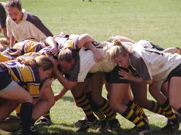
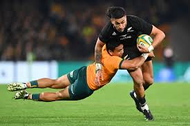

A Very Basic Summary of Rugby
Basic Rules
Here is a summary of the most basic, and fundamental rules of rugby
- The aim of the game is to have more points than the other team after an 80 minute match
Points can be scored in the following ways:
- Try - 5 points - by touching the ball on the ground beyond your try line
- Conversion - 2 points - by kicking through the posts after a try has been scored
- Penalty - 3 points - a team can choose to kick to the posts if the other team concedes a penalty
- Drop Goal - 3 points - Kicked out of the hand, to bounce off the floor and then be kicked through the posts
- Each team has 15 players
- The ball must be passed backwards, but can be kicked forwards
- The defneding team can tackle the call carrier down to the ground, as long as they hit below the sternum
- There are three types of 'set play' in a game of rugby union:
- Scrum - following a knock on or penalty, the forwards form a bridge to push against each other and fight for the ball that is under their feet
- Lineout - when the ball goes over the sideline, it is thrown back in where two lines of each team are formed and they both try to reach for the ball
- Maul - Formed when the tackled person cannot get to the ground, where players from both team 'bind on' and aim to push in opposing directions down the pitch
Playing positions
Here is a list of the numbers that all correspond to a different position, and if they have any special role
- Loose head prop - left of front row in scrums
- Hooker - throws in balls from sideline at lineouts, middle of front row in scrums
- Tight head prop - right of front row in scrums
- Lock - left of second row in scrums
- Lock - right of second row in scrums
- Flanker - to the left of and behind left lock in scrums
- Flanker - to the right of and behind right lock in scrums
- Number 8 - the back row in the scrum
- Scrum half - will handle balls that are presented at the back of rucks, often relied on to box kick ball up the pitch
- Fly half - often (but not necessarily) the player who kicks to the posts
- Left wing - super speedy
- Inside center - the thinker
- Outside center - support full back and strategy choices
- Right wing - super duper speedy
- Full back - Supporting from the back
Current league standings
To see the current union world standings, click here
To see the Gallagher Premiership standings, click here
English Premiership Teams
| Team Name |
Location |
Location |
Founded |
| Bath Rugby |
Bath |
Recreation Ground |
1865 |
| Bristol Bears |
Bristol |
Ashton Gate |
1888 |
| Exeter Chiefs |
Exeter |
Sandy Park |
1871 |
| Gloucester Rugby |
Gloucester |
Kingsholm |
1873 |
| Harlequins |
London |
Twickenham Stoop |
1866 |
| Leicester Tigers |
Leicester |
Welford Road |
1880 |
| Newcastle Falcons |
Newcastle |
Kingston Park |
1877 |
| Northampton Saints |
Northampton |
Franklin's Garden |
1880 |
| Sale Sharks *the best* |
Manchester |
Salford Stadium |
1861 |
| Saracens |
London |
Stonex Stadium |
1876 |

